The core goal of this case study is to build a report using fictitious datasets from a Tech company called Atlas Labs. Atlas Labs HR team want to be able to monitor key metrics on employees. Their secondary goal is to understand what factors impact employee attrition.
This project analyzes historical trip data from Divvy to uncover distinct bike usage patterns across different user segments. By bridging behavioral data with environmental factors, the goal is to provide actionable insights that help stakeholders design highly targeted, data-driven marketing and operational strategies.
The analysis focuses on the period from April 2020 to December 2025. This specific timeframe was selected because Divvy underwent a major system migration and data schema shift in April 2020. Standardizing on this modern schema ensures accurate and consistent long-term trend analysis.
temperature,
humidity, precipitation, and wind speed were extracted.
year,
month, day_of_week,
and hour) to analyze cyclical usage patterns.
tripduration in minutes
and applied strict boundary filters to
remove non-representative data points.After data preprocessing, we have a dataset contatining 23201748 rows and 25 columns.
| Feature | Description | Type |
|---|---|---|
| ride_id | Unique identifier for each trip | Object |
| rideable_type | Type of bike used (e.g., classic, electric) | Object |
| started_at | Trip start timestamp | Datetime |
| ended_at | Trip end timestamp | Datetime |
| start_station_name | Name of the starting station | Object |
| start_station_id | Unique ID of the starting station | Object |
| end_station_name | Name of the ending station | Object |
| end_station_id | Unique ID of the ending station | Object |
| start_lat | Latitude of trip start location | Float |
| start_lng | Longitude of trip start location | Float |
| end_lat | Latitude of trip end location | Float |
| end_lng | Longitude of trip end location | Float |
| member_casual | User type (member or casual rider) | Object |
| temp | Temperature at trip start time | Float |
| humidity | Humidity level (%) | Int |
| precip | Precipitation level (rain/snow) | Float |
| wind_speed | Wind speed at trip time | Float |
| condition_code | Weather condition category code | Int |
| year | Year extracted from timestamp | Int |
| month | Month extracted from timestamp | Int |
| week | Week number of the year | Int |
| day | Day of the week | Int |
| hour | Hour of the day | Int |
| tripduration | Trip duration in minutes | Float |
| events | Weather events (e.g., rain, snow, fog) | Object |
Across 23.2 million filtered rides, four dimensions of analysis — behavior, time, space, and weather — converge on the same conclusion: members and casual riders are not different subscription tiers. They are two fundamentally different people, with different purposes, schedules, and responses to the environment.
Members dominate total trips and ride with short, tightly clustered durations — the signature of habitual, purposeful use. Casual riders take fewer trips but stay out longer, with a higher median and a far wider spread (Fig 1). The KDE overlay (Fig 2) makes the shape difference explicit: the member curve peaks sharply around 8–10 minutes while the casual curve peaks later and trails a heavy right tail of 30–60 minute rides. Same system, completely different purpose — a divergence that every subsequent finding will confirm.
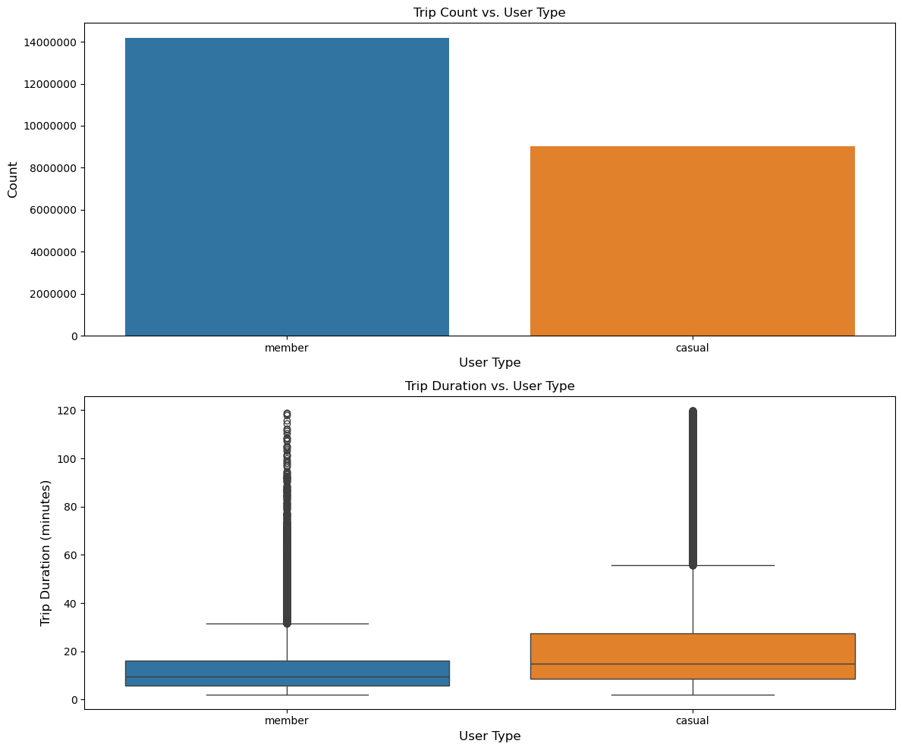
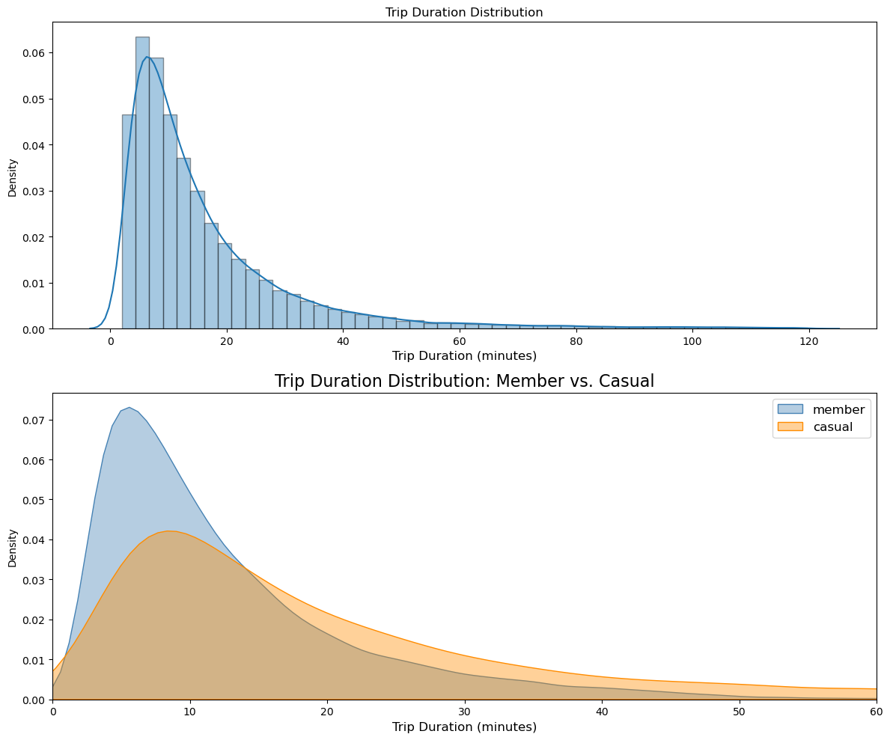
Splitting ridership by time dismantles any doubt. Members show a hard dual-peak at 8 AM and 5 PM on weekdays — a textbook commuter fingerprint. Casual riders peak at 2–4 PM and surge on weekends while members decline. This is not a matter of degree; it is a complete reversal of pattern. The seasonal view reinforces it: casual volume collapses in winter while member ridership holds, because members have no alternative — the bike is their commute.
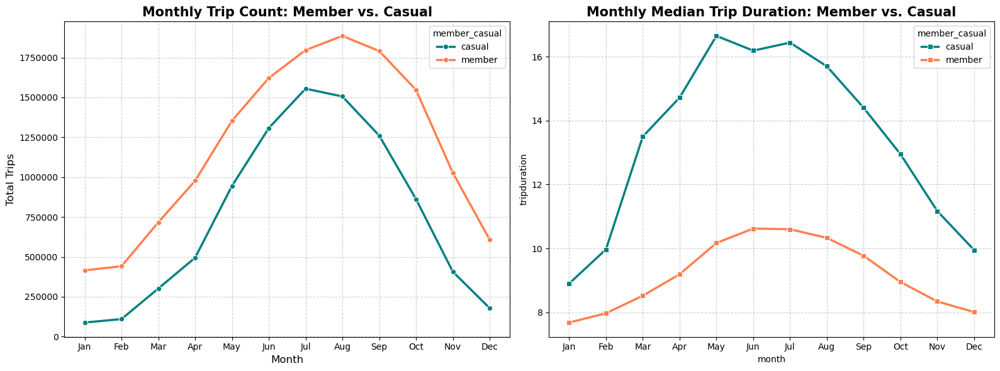
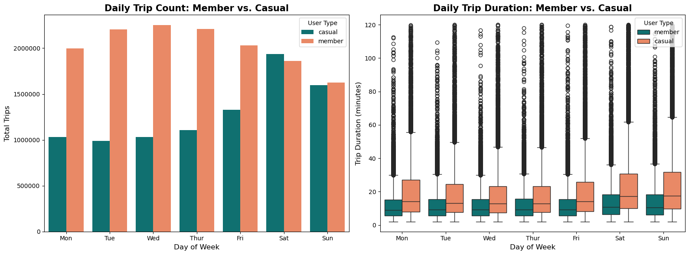
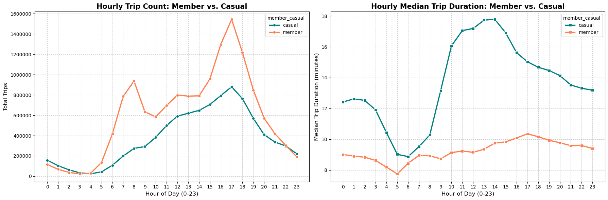
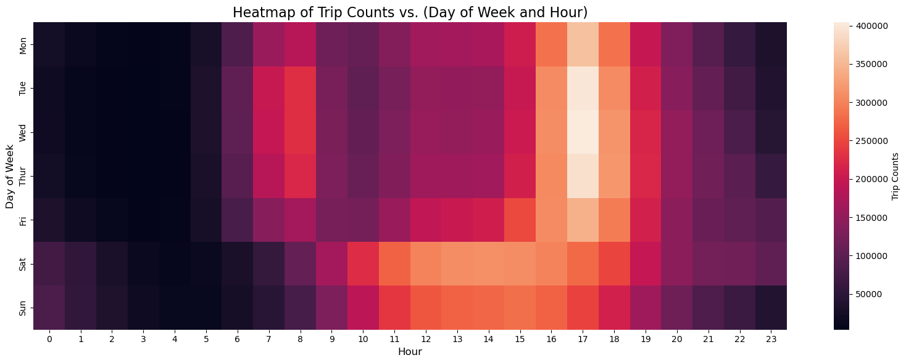
The behavioral split is physically encoded in the city. Member-dominant stations cluster near transit hubs and office districts. The top casual stations — Streeter Dr. & Grand Ave. (Navy Pier) and Millennium Park — are tourist and recreation corridors. The Efficiency Paradox chart makes the contrast concrete: members ride in straight, purposeful lines (above the 15 km/h reference); casuals ride in loops, spending more time to travel less distance.
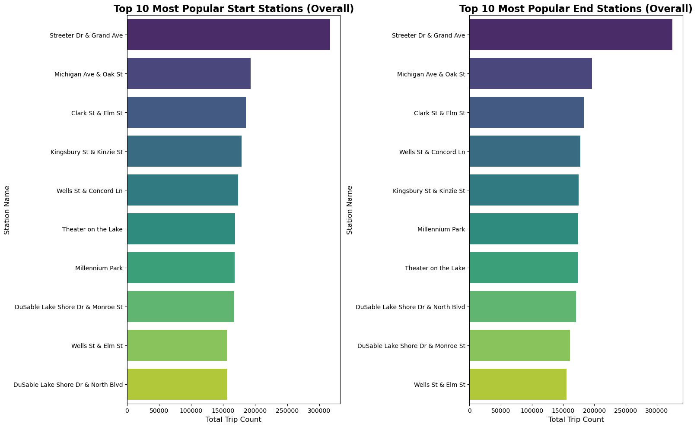
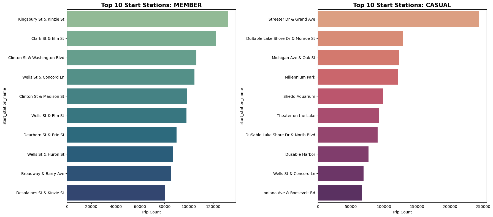
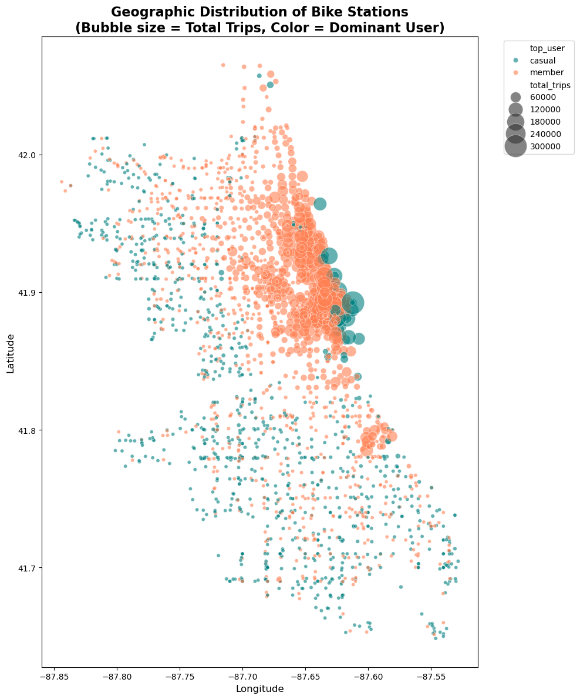
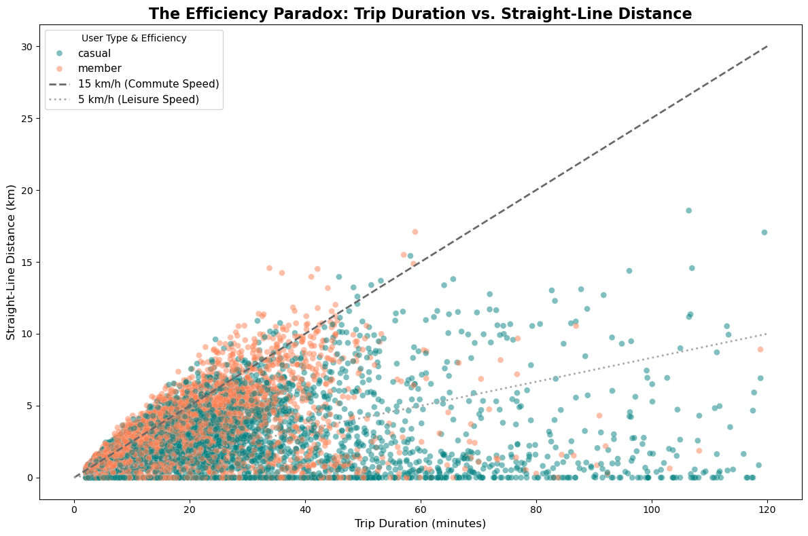
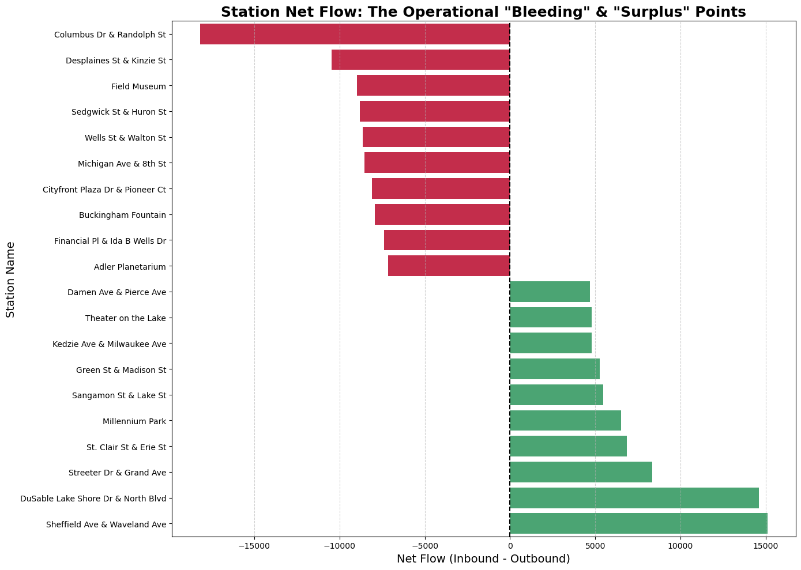
Weather is the ultimate behavioral test. When it rains or the temperature drops below 10°C, casual ridership falls sharply — they have a choice, and they exercise it. Members maintain ridership through rain and cold because the bike is their commute, not an option. The temperature sensitivity curve shows this gap explicitly: casual volume tracks the weather closely, while member volume holds a relatively flat baseline. On rainy weekdays versus rainy weekends, the effect compounds for casuals.
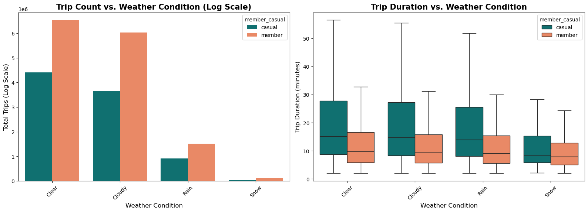
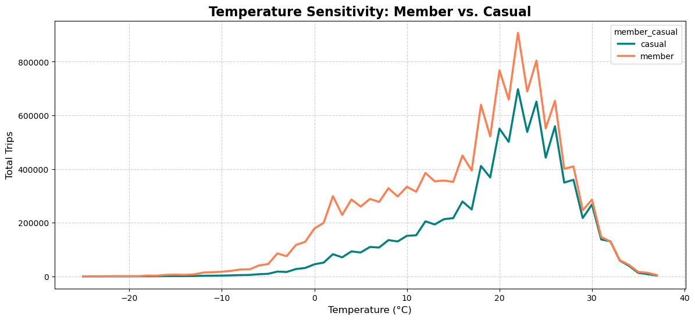
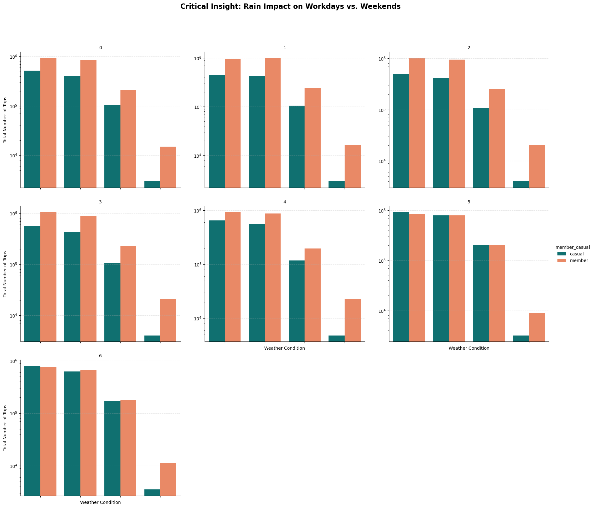